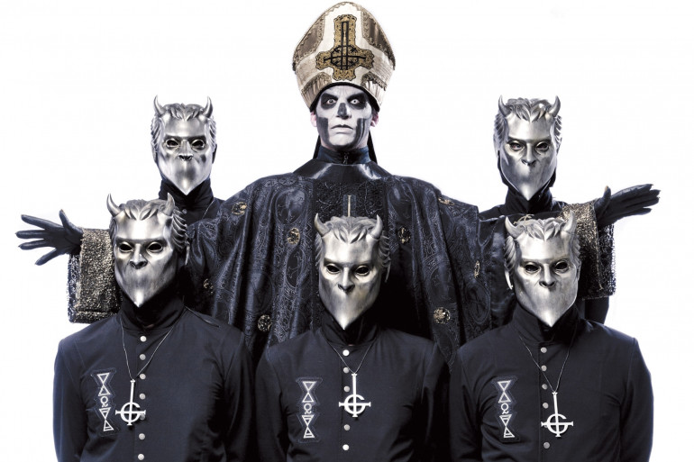

Groupe suédois de rock/metal
Ghost est un groupe suédois de rock/metal originaire de Linköping, formé en 2006. Leur style musical mélange hard rock, heavy metal, doom metal, rock progressif et pop rock. Le groupe est connu pour son image théâtrale avec des costumes de prêtres sataniques et des masques.
Découvrez l'une de mes chansons préférées de Ghost :
Écouter "Mary On A Cross" sur YouTube